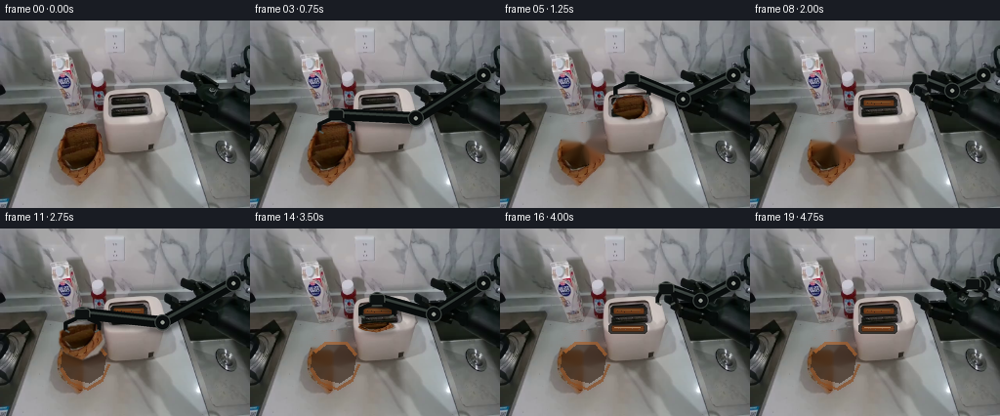
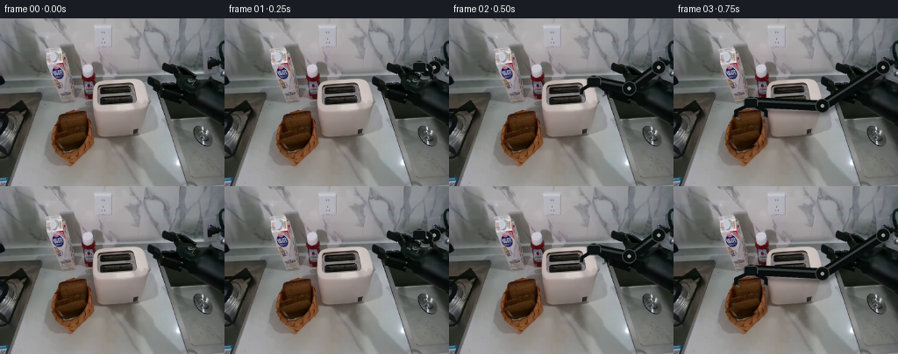
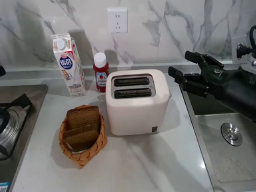
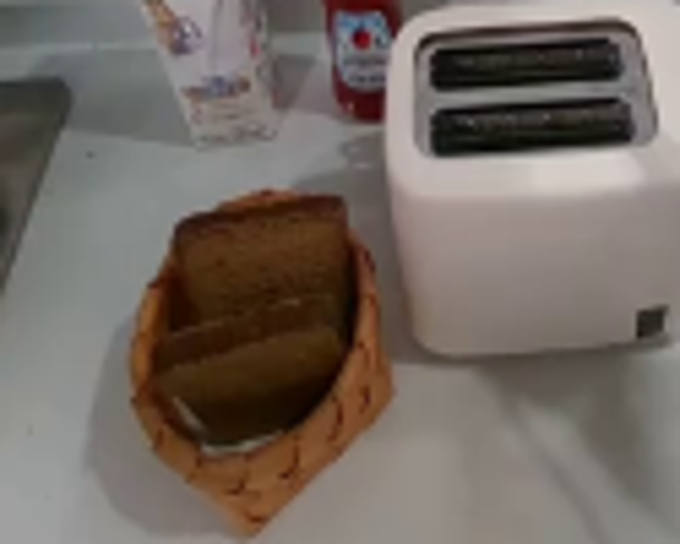
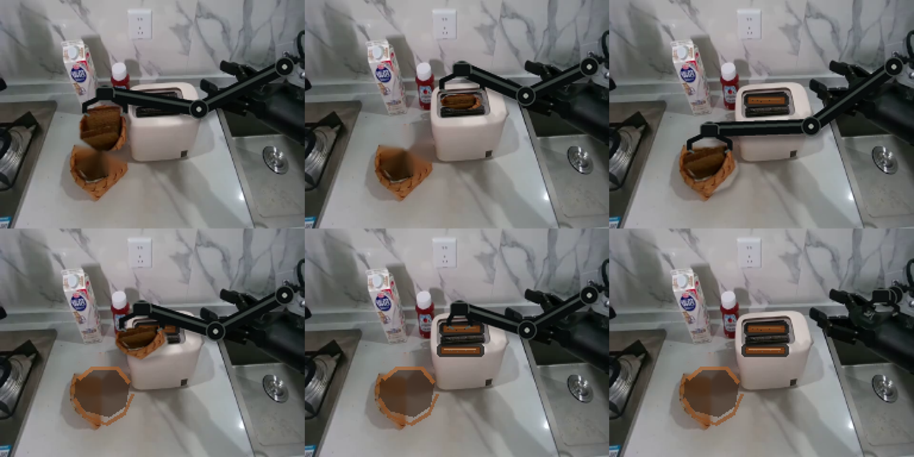

CODING AGENTS AS PIXEL WORLD MODELS
traex/GPT-5.6-Sol · common50_0002
点击播放 · 原生 RGB 像素
逐轮保存的候选
回放视频、检查图与代码变化。
每份候选均可单独播放。实际图片检查记录在下方工具轨迹中。
候选 01播放与检查图
点击播放 · 原生 RGB 像素

展开代码变化
--- 上一保存版本
+++ 本次保存版本
@@ -0,0 +1,180 @@
+from pathlib import Path
+import math
+import cv2
+import numpy as np
+from PIL import Image, ImageDraw, ImageFilter
+import artifact_io
+
+ROOT = Path(__file__).resolve().parent
+W,H = 256,192
+src = np.array(Image.open(ROOT/'first_frame.png').convert('RGB'))
+
+# Soft, source-derived bread sprites. Keeping the photographed crumb/crust preserves realism.
+def sprite_from_polygon(box, points, feather=1.0):
+ x0,y0,x1,y1=box
+ rgb=src[y0:y1,x0:x1].copy()
+ mask=np.zeros((y1-y0,x1-x0),np.uint8)
+ p=np.asarray([(x-x0,y-y0) for x,y in points],np.int32)
+ cv2.fillPoly(mask,[p],255)
+ if feather:
+ mask=cv2.GaussianBlur(mask,(3,3),feather)
+ return rgb,mask
+
+back_poly=[(70,106),(94,104),(103,108),(108,119),(105,137),(99,145),(80,148),(64,137),(63,119)]
+front_poly=[(61,132),(72,126),(100,124),(108,134),(109,146),(101,158),(84,164),(68,157),(60,146)]
+bread1=sprite_from_polygon((59,101,112,151),back_poly)
+bread2=sprite_from_polygon((57,121,113,168),front_poly)
+
+# Two progressively emptied photographic backgrounds. Inpaint only exposed bread; retain basket rim.
+def make_empty(remove_first,remove_second):
+ bgr=cv2.cvtColor(src,cv2.COLOR_RGB2BGR)
+ mask=np.zeros((H,W),np.uint8)
+ if remove_first:
+ cv2.fillPoly(mask,[np.asarray(back_poly,np.int32)],255)
+ if remove_second:
+ cv2.fillPoly(mask,[np.asarray(front_poly,np.int32)],255)
+ # protect the wicker outline by using a modest inpaint radius
+ out=cv2.inpaint(bgr,mask,3,cv2.INPAINT_TELEA)
+ out=cv2.cvtColor(out,cv2.COLOR_BGR2RGB)
+ if remove_second:
+ # Empty, shadowed inside of the basket, with warm photographic wicker edges retained.
+ pil=Image.fromarray(out)
+ lay=Image.new('RGBA',(W,H),(0,0,0,0)); d=ImageDraw.Draw(lay)
+ d.polygon([(64,126),(76,117),(99,118),(108,130),(105,149),(91,158),(72,153),(62,142)],
+ fill=(52,34,22,155))
+ d.line([(62,143),(71,157),(89,164),(104,155),(111,139)],fill=(137,75,32,175),width=3)
+ d.line([(66,126),(77,117),(98,117),(108,129)],fill=(166,93,39,170),width=3)
+ out=np.array(Image.alpha_composite(pil.convert('RGBA'),lay).convert('RGB'))
+ return out
+
+empty1=make_empty(True,False)
+empty2=make_empty(True,True)
+
+# Alpha composite an affine-warped source sprite centered at (cx,cy).
+def paste_sprite(canvas,sprite,center,scale=(1,1),angle=0,alpha_mul=1.0,shadow=True):
+ rgb,a=sprite; sh,sw=a.shape
+ th=math.radians(angle)
+ sx,sy=scale
+ M=np.array([[sx*math.cos(th), sy*math.sin(th), 0],
+ [-sx*math.sin(th), sy*math.cos(th),0]],np.float32)
+ M[0,2]=center[0]-M[0,0]*sw/2-M[0,1]*sh/2
+ M[1,2]=center[1]-M[1,0]*sw/2-M[1,1]*sh/2
+ wr=cv2.warpAffine(rgb,M,(W,H),flags=cv2.INTER_CUBIC,borderMode=cv2.BORDER_CONSTANT)
+ wa=cv2.warpAffine(a,M,(W,H),flags=cv2.INTER_CUBIC,borderMode=cv2.BORDER_CONSTANT).astype(np.float32)/255
+ wa=np.clip(wa*alpha_mul,0,1)
+ if shadow:
+ sm=cv2.GaussianBlur(wa,(0,0),2.2)
+ sm=np.roll(np.roll(sm,3,0),2,1)*0.28
+ canvas[:]=(canvas*(1-sm[...,None])).astype(np.uint8)
+ canvas[:]=(canvas*(1-wa[...,None])+wr*wa[...,None]).astype(np.uint8)
+
+# Bread remaining above the toaster slots after insertion.
+def draw_toast_top(im,slot,variant=0):
+ x0,y0,x1,y1=slot
+ pil=Image.fromarray(im); ov=Image.new('RGBA',(W,H),(0,0,0,0)); d=ImageDraw.Draw(ov)
+ # black slot lip, brown crust and grainy crumb face
+ d.rounded_rectangle((x0,y0,x1,y1),radius=3,fill=(24,23,20,205))
+ d.rounded_rectangle((x0+3,y0+2,x1-3,y1-2),radius=2,fill=(104,58,27,255),outline=(61,38,24,255),width=1)
+ d.line((x0+6,y0+4,x1-7,y0+4),fill=(169,111,57,170),width=1)
+ for k in range(5):
+ xx=x0+7+((k*7+variant*3)%(x1-x0-13))
+ d.point((xx,y0+5+(k%2)),fill=(61,39,24,180))
+ im[:]=np.array(Image.alpha_composite(pil.convert('RGBA'),ov).convert('RGB'))
+
+# Smooth path through key poses.
+def interp(keys,t):
+ if t<=keys[0][0]: return np.array(keys[0][1],float)
+ if t>=keys[-1][0]: return np.array(keys[-1][1],float)
+ for (ta,a),(tb,b) in zip(keys[:-1],keys[1:]):
+ if ta<=t<=tb:
+ u=(t-ta)/(tb-ta); u=u*u*(3-2*u)
+ return np.array(a)*(1-u)+np.array(b)*u
+
+# Draw a stable two-link arm rooted in the existing black assembly at upper-right.
+def draw_arm(im,wrist,jaw=30,holding=False,phase=0):
+ wrist=np.asarray(wrist,float)
+ shoulder=np.array([239.,56.])
+ # elbow chosen above the straight shoulder-wrist line: rigid links retain constant visual widths.
+ mid=(shoulder+wrist)/2
+ v=wrist-shoulder; L=max(np.linalg.norm(v),1); n=np.array([-v[1],v[0]])/L
+ elbow=mid-n*min(25,0.22*L)
+ S=3
+ ov=Image.new('RGBA',(W*S,H*S),(0,0,0,0)); d=ImageDraw.Draw(ov)
+ def P(p): return tuple(np.round(np.asarray(p)*S).astype(int))
+ # soft cast shadow on countertop
+ sh=Image.new('RGBA',(W*S,H*S),(0,0,0,0)); sd=ImageDraw.Draw(sh)
+ sd.line([P(shoulder+[2,5]),P(elbow+[2,5]),P(wrist+[2,5])],fill=(0,0,0,60),width=12*S,joint='curve')
+ sh=sh.filter(ImageFilter.GaussianBlur(2*S))
+ ov=Image.alpha_composite(ov,sh)
+ d=ImageDraw.Draw(ov)
+ # arm body / highlights
+ d.line([P(shoulder),P(elbow),P(wrist)],fill=(8,12,12,255),width=12*S,joint='curve')
+ d.line([P(shoulder-[0,2]),P(elbow-[0,2]),P(wrist-[0,2])],fill=(52,61,57,230),width=3*S,joint='curve')
+ for p,r in ((shoulder,8),(elbow,8),(wrist,7)):
+ d.ellipse((int((p[0]-r)*S),int((p[1]-r)*S),int((p[0]+r)*S),int((p[1]+r)*S)),fill=(11,15,15,255),outline=(65,73,69,255),width=1*S)
+ d.ellipse((int((p[0]-2)*S),int((p[1]-2)*S),int((p[0]+2)*S),int((p[1]+2)*S)),fill=(143,149,141,255))
+ # compact gripper palm and opposing rigid jaws, vertically down from wrist
+ wx,wy=wrist
+ d.rounded_rectangle((int((wx-8)*S),int((wy-5)*S),int((wx+8)*S),int((wy+7)*S)),radius=3*S,
+ fill=(13,17,17,255),outline=(79,85,80,255),width=S)
+ sep=jaw/2
+ finger=17 if holding else 15
+ for sg in (-1,1):
+ x=wx+sg*sep
+ d.line([P([wx+sg*6,wy+5]),P([x,wy+10]),P([x,wy+finger])],fill=(9,12,12,255),width=4*S,joint='curve')
+ d.line([P([x,wy+finger]),P([x-sg*4,wy+finger+2])],fill=(75,81,76,255),width=2*S)
+ ov=ov.resize((W,H),Image.Resampling.LANCZOS)
+ im[:]=np.array(Image.alpha_composite(Image.fromarray(im).convert('RGBA'),ov).convert('RGB'))
+
+frames=[]
+# Path of wrist/palm. Bread center sits 24 px below the wrist while held.
+wrist_keys=[(1,(222,55)),(2,(165,72)),(3,(88,96)),(4,(88,78)),(5,(135,59)),(6,(132,58)),
+ (7,(132,55)),(8,(174,59)),(9,(127,82)),(10,(84,109)),(11,(84,87)),
+ (12,(119,67)),(13,(130,73)),(14,(130,72)),(15,(130,67)),(16,(170,61)),(19,(228,56))]
+
+for f in range(20):
+ if f==0:
+ frames.append(src.copy()); continue
+ # background state follows actual grasp/removal, never before contact
+ if f<4: im=src.copy()
+ elif f<11: im=empty1.copy()
+ else: im=empty2.copy()
+ # Persist inserted slices in the two slots.
+ if f>=7: draw_toast_top(im,(113,79,150,89),0)
+ if f>=15: draw_toast_top(im,(111,97,150,107),1)
+
+ wrist=interp(wrist_keys,f)
+ # jaw opens on approach/release and closes only around a slice
+ if f in (3,4,5,6): jaw=34; holding=True
+ elif f in (10,11,12,13,14): jaw=34; holding=True
+ else: jaw=18 if f in (7,8,15,16) else 28; holding=False
+
+ # arm is behind the carried bread; jaws are redrawn as part of arm and overlap its sides.
+ # First draw arm, then bread, then lightweight fingertips for convincing grip.
+ draw_arm(im,wrist,jaw=jaw,holding=holding,phase=f)
+
+ if 3<=f<=6:
+ # lift and translate first slice; flatten progressively as it enters upper slot
+ centers={3:(86,124),4:(88,107),5:(135,88),6:(132,85)}
+ scales={3:(0.98,0.98),4:(0.94,0.90),5:(0.86,0.58),6:(0.78,0.30)}
+ paste_sprite(im,bread1,centers[f],scales[f],angle=-3 if f<5 else 0,shadow=True)
+ # fingertips over crust
+ draw_arm(im,wrist,jaw=jaw,holding=True,phase=f)
+ if 10<=f<=14:
+ centers={10:(84,143),11:(84,116),12:(119,96),13:(130,102),14:(130,101)}
+ scales={10:(0.98,0.98),11:(0.94,0.9),12:(0.88,0.68),13:(0.82,0.45),14:(0.76,0.25)}
+ paste_sprite(im,bread2,centers[f],scales[f],angle=2 if f<12 else 0,shadow=True)
+ draw_arm(im,wrist,jaw=jaw,holding=True,phase=f)
+
+ # very subtle warm toaster-slot glow once both are seated, suggesting active toasting.
+ if f>=16:
+ pil=Image.fromarray(im); ov=Image.new('RGBA',(W,H),(0,0,0,0)); d=ImageDraw.Draw(ov)
+ d.line((116,84,147,84),fill=(214,82,25,30+(f-16)*6),width=1)
+ d.line((114,102,147,102),fill=(214,82,25,30+(f-16)*6),width=1)
+ im=np.array(Image.alpha_composite(pil.convert('RGBA'),ov).convert('RGB'))
+ frames.append(im)
+
+frames=np.stack(frames).astype(np.uint8)
+# Contract guarantee.
+assert np.array_equal(frames[0],src)
+artifact_io.save(frames,ROOT)
候选 02播放与检查图
点击播放 · 原生 RGB 像素


展开代码变化
--- 上一保存版本
+++ 本次保存版本
@@ -37,14 +37,20 @@
out=cv2.inpaint(bgr,mask,3,cv2.INPAINT_TELEA)
out=cv2.cvtColor(out,cv2.COLOR_BGR2RGB)
if remove_second:
- # Empty, shadowed inside of the basket, with warm photographic wicker edges retained.
- pil=Image.fromarray(out)
- lay=Image.new('RGBA',(W,H),(0,0,0,0)); d=ImageDraw.Draw(lay)
- d.polygon([(64,126),(76,117),(99,118),(108,130),(105,149),(91,158),(72,153),(62,142)],
- fill=(52,34,22,155))
- d.line([(62,143),(71,157),(89,164),(104,155),(111,139)],fill=(137,75,32,175),width=3)
- d.line([(66,126),(77,117),(98,117),(108,129)],fill=(166,93,39,170),width=3)
- out=np.array(Image.alpha_composite(pil.convert('RGBA'),lay).convert('RGB'))
+ # Smooth, shadowed basket cavity. A feathered mask avoids any synthetic hard edge.
+ cavity=np.zeros((H,W),np.uint8)
+ cavity_poly=np.asarray([(64,128),(76,118),(98,119),(107,130),(104,148),(91,157),(73,153),(63,142)],np.int32)
+ cv2.fillPoly(cavity,[cavity_poly],230,lineType=cv2.LINE_AA)
+ cavity=cv2.GaussianBlur(cavity,(0,0),1.25).astype(np.float32)/255.0
+ yy,xx=np.mgrid[0:H,0:W]
+ # Warm interior with subtle woven, illumination-following variation.
+ weave=5*np.sin(xx*.55)+3*np.sin((xx+yy)*.28)
+ tone=np.empty_like(out,dtype=np.float32)
+ tone[...,0]=62+weave; tone[...,1]=40+weave*.55; tone[...,2]=25+weave*.3
+ out=(out*(1-cavity[...,None])+tone*cavity[...,None]).clip(0,255).astype(np.uint8)
+ # Anti-aliased wicker rim restores the photographed container structure.
+ cv2.polylines(out,[np.asarray([(62,142),(71,156),(88,163),(103,155),(110,139)],np.int32)],False,(139,78,34),2,cv2.LINE_AA)
+ cv2.polylines(out,[np.asarray([(65,127),(77,117),(98,117),(108,129)],np.int32)],False,(169,98,45),2,cv2.LINE_AA)
return out
empty1=make_empty(True,False)
候选 03播放与检查图
可观测工具轨迹
实际执行的命令与返回图片。
命令 1exit 0
/bin/bash -lc "cat prompt.txt && printf '\\n---RULES---\\n' && cat GENERATION_RULES.md"
命令 2exit 0
/bin/bash -lc "find . -maxdepth 2 -type f -printf '%p %s bytes\\n' | sort"
命令 3exit 0
/bin/bash -lc "which ffmpeg; which python3; python3 - <<'PY'
try:
import cv2; print('cv2',cv2.__version__)
except Exception as e: print('no cv2',e)
try:
import PIL; print('PIL',PIL.__version__)
except Exception as e: print('no PIL',e)
PY"命令 4exit 0
/bin/bash -lc "cat task_spec.json && sed -n '1,240p' artifact_io.py"
命令 5exit 0
/bin/bash -lc "python3 - <<'PY'
from PIL import Image
im=Image.open('first_frame.png')
im.crop((35,70,160,170)).resize((750,600)).save('.tmp/crop.png')
PY"命令 6exit 1
/bin/bash -lc "cat > generate.py <<'PY'
from pathlib import Path
import math
import cv2
import numpy as np
from PIL import Image, ImageDraw
import artifact_io
ROOT = Path(__file__).resolve().parent
W,H = 256,192
src = np.array(Image.open(ROOT/'first_frame.png').convert('RGB'))
# Soft, source-derived bread sprites. Keeping the photographed crumb/crust preserves realism.
def sprite_from_polygon(box, points, feather=1.0):
x0,y0,x1,y1=box
rgb=src[y0:y1,x0:x1].copy()
mask=np.zeros((y1-y0,x1-x0),np.uint8)
p=np.asarray([(x-x0,y-y0) for x,y in points],np.int32)
cv2.fillPoly(mask,[p],255)
if feather:
mask=cv2.GaussianBlur(mask,(3,3),feather)
return rgb,mask
back_poly=[(70,106),(94,104),(103,108),(108,119),(105,137),(99,145),(80,148),(64,137),(63,119)]
front_poly=[(61,132),(72,126),(100,124),(108,134),(109,146),(101,158),(84,164),(68,157),(60,146)]
bread1=sprite_from_polygon((59,101,112,151),back_poly)
bread2=sprite_from_polygon((57,121,113,168),front_poly)
# Two progressively emptied photographic backgrounds. Inpaint only exposed bread; retain basket rim.
def make_empty(remove_first,remove_second):
bgr=cv2.cvtColor(src,cv2.COLOR_RGB2BGR)
mask=np.zeros((H,W),np.uint8)
if remove_first:
cv2.fillPoly(mask,[np.asarray(back_poly,np.int32)],255)
if remove_second:
cv2.fillPoly(mask,[np.asarray(front_poly,np.int32)],255)
# protect the wicker outline by using a modest inpaint radius
out=cv2.inpaint(bgr,mask,3,cv2.INPAINT_TELEA)
out=cv2.cvtColor(out,cv2.COLOR_BGR2RGB)
if remove_second:
# Empty, shadowed inside of the basket, with warm photographic wicker edges retained.
pil=Image.fromarray(out)
lay=Image.new('RGBA',(W,H),(0,0,0,0)); d=ImageDraw.Draw(lay)
d.polygon([(64,126),(76,117),(99,118),(108,130),(105,149),(91,158),(72,153),(62,142)],
fill=(52,34,22,155))
d.line([(62,143),(71,157),(89,164),(104,155),(111,139)],fill=(137,75,32,175),width=3)
d.line([(66,126),(77,117),(98,117),(108,129)],fill=(166,93,39,170),width=3)
out=np.array(Image.alpha_composite(pil.convert('RGBA'),lay).convert('RGB'))
return out
empty1=make_empty(True,False)
empty2=make_empty(True,True)
# Alpha composite an affine-warped source sprite centered at (cx,cy).
def paste_sprite(canvas,sprite,center,scale=(1,1),angle=0,alpha_mul=1.0,shadow=True):
rgb,a=sprite; sh,sw=a.shape
th=math.radians(angle)
sx,sy=scale
M=np.array([[sx*math.cos(th), sy*math.sin(th), 0],
[-sx*math.sin(th), sy*math.cos(th),0]],np.float32)
M[0,2]=center[0]-M[0,0]*sw/2-M[0,1]*sh/2
M[1,2]=center[1]-M[1,0]*sw/2-M[1,1]*sh/2
wr=cv2.warpAffine(rgb,M,(W,H),flags=cv2.INTER_CUBIC,borderMode=cv2.BORDER_CONSTANT)
wa=cv2.warpAffine(a,M,(W,H),flags=cv2.INTER_CUBIC,borderMode=cv2.BORDER_CONSTANT).astype(np.float32)/255
wa=np.clip(wa*alpha_mul,0,1)
if shadow:
sm=cv2.GaussianBlur(wa,(0,0),2.2)
sm=np.roll(np.roll(sm,3,0),2,1)*0.28
canvas[:]=(canvas*(1-sm[...,None])).astype(np.uint8)
canvas[:]=(canvas*(1-wa[...,None])+wr*wa[...,None]).astype(np.uint8)
# Bread remaining above the toaster slots after insertion.
def draw_toast_top(im,slot,variant=0):
x0,y0,x1,y1=slot
pil=Image.fromarray(im); ov=Image.new('RGBA',(W,H),(0,0,0,0)); d=ImageDraw.Draw(ov)
# black slot lip, brown crust and grainy crumb face
d.rounded_rectangle((x0,y0,x1,y1),radius=3,fill=(24,23,20,205))
d.rounded_rectangle((x0+3,y0+2,x1-3,y1-2),radius=2,fill=(104,58,27,255),outline=(61,38,24,255),width=1)
d.line((x0+6,y0+4,x1-7,y0+4),fill=(169,111,57,170),width=1)
for k in range(5):
xx=x0+7+((k*7+variant*3)%(x1-x0-13))
d.point((xx,y0+5+(k%2)),fill=(61,39,24,180))
im[:]=np.array(Image.alpha_composite(pil.convert('RGBA'),ov).convert('RGB'))
# Smooth path through key poses.
def interp(keys,t):
if t<=keys[0][0]: return np.array(keys[0][1],float)
if t>=keys[-1][0]: return np.array(keys[-1][1],float)
for (ta,a),(tb,b) in zip(keys[:-1],keys[1:]):
if ta<=t<=tb:
u=(t-ta)/(tb-ta); u=u*u*(3-2*u)
return np.array(a)*(1-u)+np.array(b)*u
# Draw a stable two-link arm rooted in the existing black assembly at upper-right.
def draw_arm(im,wrist,jaw=30,holding=False,phase=0):
wrist=np.asarray(wrist,float)
shoulder=np.array([239.,56.])
# elbow chosen above the straight shoulder-wrist line: rigid links retain constant visual widths.
mid=(shoulder+wrist)/2
v=wrist-shoulder; L=max(np.linalg.norm(v),1); n=np.array([-v[1],v[0]])/L
elbow=mid-n*min(25,0.22*L)
S=3
ov=Image.new('RGBA',(W*S,H*S),(0,0,0,0)); d=ImageDraw.Draw(ov)
def P(p): return tuple(np.round(np.asarray(p)*S).astype(int))
# soft cast shadow on countertop
sh=Image.new('RGBA',(W*S,H*S),(0,0,0,0)); sd=ImageDraw.Draw(sh)
sd.line([P(shoulder+[2,5]),P(elbow+[2,5]),P(wrist+[2,5])],fill=(0,0,0,60),width=12*S,joint='curve')
sh=sh.filter(Image.Resampling.BILINEAR)
ov=Image.alpha_composite(ov,sh)
d=ImageDraw.Draw(ov)
# arm body / highlights
d.line([P(shoulder),P(elbow),P(wrist)],fill=(8,12,12,255),width=12*S,joint='curve')
d.line([P(shoulder-[0,2]),P(elbow-[0,2]),P(wrist-[0,2])],fill=(52,61,57,230),width=3*S,joint='curve')
for p,r in ((shoulder,8),(elbow,8),(wrist,7)):
d.ellipse((int((p[0]-r)*S),int((p[1]-r)*S),int((p[0]+r)*S),int((p[1]+r)*S)),fill=(11,15,15,255),outline=(65,73,69,255),width=1*S)
d.ellipse((int((p[0]-2)*S),int((p[1]-2)*S),int((p[0]+2)*S),int((p[1]+2)*S)),fill=(143,149,141,255))
# compact gripper palm and opposing rigid jaws, vertically down from wrist
wx,wy=wrist
d.rounded_rectangle((int((wx-8)*S),int((wy-5)*S),int((wx+8)*S),int((wy+7)*S)),radius=3*S,
fill=(13,17,17,255),outline=(79,85,80,255),width=S)
sep=jaw/2
finger=17 if holding else 15
for sg in (-1,1):
x=wx+sg*sep
d.line([P([wx+sg*6,wy+5]),P([x,wy+10]),P([x,wy+finger])],fill=(9,12,12,255),width=4*S,joint='curve')
d.line([P([x,wy+finger]),P([x-sg*4,wy+finger+2])],fill=(75,81,76,255),width=2*S)
ov=ov.resize((W,H),Image.Resampling.LANCZOS)
im[:]=np.array(Image.alpha_composite(Image.fromarray(im).convert('RGBA'),ov).convert('RGB'))
frames=[]
# Path of wrist/palm. Bread center sits 24 px below the wrist while held.
wrist_keys=[(1,(222,55)),(2,(165,72)),(3,(88,96)),(4,(88,78)),(5,(135,59)),(6,(132,58)),
(7,(132,55)),(8,(174,59)),(9,(127,82)),(10,(84,109)),(11,(84,87)),
(12,(119,67)),(13,(130,73)),(14,(130,72)),(15,(130,67)),(16,(170,61)),(19,(228,56))]
for f in range(20):
if f==0:
frames.append(src.copy()); continue
# background state follows actual grasp/removal, never before contact
if f<4: im=src.copy()
elif f<11: im=empty1.copy()
else: im=empty2.copy()
# Persist inserted slices in the two slots.
if f>=7: draw_toast_top(im,(113,79,150,89),0)
if f>=15: draw_toast_top(im,(111,97,150,107),1)
wrist=interp(wrist_keys,f)
# jaw opens on approach/release and closes only around a slice
if f in (3,4,5,6): jaw=34; holding=True
elif f in (10,11,12,13,14): jaw=34; holding=True
else: jaw=18 if f in (7,8,15,16) else 28; holding=False
# arm is behind the carried bread; jaws are redrawn as part of arm and overlap its sides.
# First draw arm, then bread, then lightweight fingertips for convincing grip.
draw_arm(im,wrist,jaw=jaw,holding=holding,phase=f)
if 3<=f<=6:
# lift and translate first slice; flatten progressively as it enters upper slot
centers={3:(86,124),4:(88,107),5:(135,88),6:(132,85)}
scales={3:(0.98,0.98),4:(0.94,0.90),5:(0.86,0.58),6:(0.78,0.30)}
paste_sprite(im,bread1,centers[f],scales[f],angle=-3 if f<5 else 0,shadow=True)
# fingertips over crust
draw_arm(im,wrist,jaw=jaw,holding=True,phase=f)
if 10<=f<=14:
centers={10:(84,143),11:(84,116),12:(119,96),13:(130,102),14:(130,101)}
scales={10:(0.98,0.98),11:(0.94,0.9),12:(0.88,0.68),13:(0.82,0.45),14:(0.76,0.25)}
paste_sprite(im,bread2,centers[f],scales[f],angle=2 if f<12 else 0,shadow=True)
draw_arm(im,wrist,jaw=jaw,holding=True,phase=f)
# very subtle warm toaster-slot glow once both are seated, suggesting active toasting.
if f>=16:
pil=Image.fromarray(im); ov=Image.new('RGBA',(W,H),(0,0,0,0)); d=ImageDraw.Draw(ov)
d.line((116,84,147,84),fill=(214,82,25,30+(f-16)*6),width=1)
d.line((114,102,147,102),fill=(214,82,25,30+(f-16)*6),width=1)
im=np.array(Image.alpha_composite(pil.convert('RGBA'),ov).convert('RGB'))
frames.append(im)
frames=np.stack(frames).astype(np.uint8)
# Contract guarantee.
assert np.array_equal(frames[0],src)
artifact_io.save(frames,ROOT)
PY
python3 generate.py
python3 - <<'PY'
import numpy as np
from PIL import Image
x=np.load('pixels.npz')['pixels']; print(x.shape,x.dtype)
print('frame0 exact',np.array_equal(np.array(Image.open('frames/00.png')),np.array(Image.open('first_frame.png'))))
PY"命令 7exit 0
/bin/bash -lc "python3 - <<'PY'
p='generate.py'
s=open(p).read().replace(\"from PIL import Image, ImageDraw\", \"from PIL import Image, ImageDraw, ImageFilter\").replace(\"sh=sh.filter(Image.Resampling.BILINEAR)\", \"sh=sh.filter(ImageFilter.GaussianBlur(2*S))\")
open(p,'w').write(s)
PY
python3 generate.py
python3 - <<'PY'
import numpy as np
from PIL import Image
x=np.load('pixels.npz')['pixels']; print(x.shape,x.dtype)
print('frame0 exact',np.array_equal(np.array(Image.open('frames/00.png')),np.array(Image.open('first_frame.png'))))
PY"命令 8exit 0
/bin/bash -lc "python3 - <<'PY'
from PIL import Image
ims=[Image.open(f'frames/{i:02}.png').resize((512,384)) for i in [4,6,10,12,15,19]]
out=Image.new('RGB',(1536,768))
for j,im in enumerate(ims):out.paste(im,((j%3)*512,(j//3)*384))
out.save('.tmp/detail.png')
PY"命令 9exit 0
/bin/bash -lc "python3 - <<'PY'
p='generate.py'; s=open(p).read()
old=''' if remove_second:\\n # Empty, shadowed inside of the basket, with warm photographic wicker edges retained.\\n pil=Image.fromarray(out)\\n lay=Image.new('RGBA',(W,H),(0,0,0,0)); d=ImageDraw.Draw(lay)\\n d.polygon([(64,126),(76,117),(99,118),(108,130),(105,149),(91,158),(72,153),(62,142)],\\n fill=(52,34,22,155))\\n d.line([(62,143),(71,157),(89,164),(104,155),(111,139)],fill=(137,75,32,175),width=3)\\n d.line([(66,126),(77,117),(98,117),(108,129)],fill=(166,93,39,170),width=3)\\n out=np.array(Image.alpha_composite(pil.convert('RGBA'),lay).convert('RGB'))\\n'''
new=''' if remove_second:\\n # Smooth, shadowed basket cavity. A feathered mask avoids any synthetic hard edge.\\n cavity=np.zeros((H,W),np.uint8)\\n cavity_poly=np.asarray([(64,128),(76,118),(98,119),(107,130),(104,148),(91,157),(73,153),(63,142)],np.int32)\\n cv2.fillPoly(cavity,[cavity_poly],230,lineType=cv2.LINE_AA)\\n cavity=cv2.GaussianBlur(cavity,(0,0),1.25).astype(np.float32)/255.0\\n yy,xx=np.mgrid[0:H,0:W]\\n # Warm interior with subtle woven, illumination-following variation.\\n weave=5*np.sin(xx*.55)+3*np.sin((xx+yy)*.28)\\n tone=np.empty_like(out,dtype=np.float32)\\n tone[...,0]=62+weave; tone[...,1]=40+weave*.55; tone[...,2]=25+weave*.3\\n out=(out*(1-cavity[...,None])+tone*cavity[...,None]).clip(0,255).astype(np.uint8)\\n # Anti-aliased wicker rim restores the photographed container structure.\\n cv2.polylines(out,[np.asarray([(62,142),(71,156),(88,163),(103,155),(110,139)],np.int32)],False,(139,78,34),2,cv2.LINE_AA)\\n cv2.polylines(out,[np.asarray([(65,127),(77,117),(98,117),(108,129)],np.int32)],False,(169,98,45),2,cv2.LINE_AA)\\n'''
assert old in s
open(p,'w').write(s.replace(old,new))
PY
python3 generate.py"视觉工具实际返回图片 1

视觉工具实际返回图片 2

视觉工具实际返回图片 3

视觉工具实际返回图片 4

视觉工具实际返回图片 5

视觉工具实际返回图片 6

保存候选 3 份；完成命令 9 次；可验证图片返回 6 张。原始 API 响应与完整日志保留在本地。